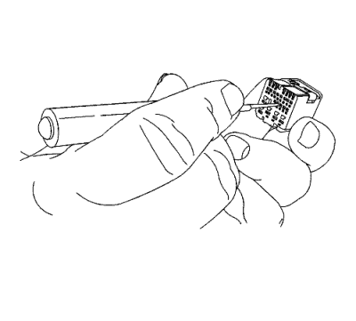

Extracción de terminal
Herramientas especiales
| • | EL-38125-580 Juego de herramientas de liberación de terminales |
| • | EL-35616 Juego de adaptadores para comprobación de conectores |
Si desea informarse sobre herramientas regionales equivalentes, consultar Herramientas especiales .
Nota: Todas las reparaciones que se realicen cerca del colector del motor, el motor turbo y de todos los tubos de escape deben realizarse siguiendo los procedimientos de Reparación de cables de alta temperatura.
- Busque la vista frontal del conector adecuado en la sección Vista frontal de los conectores. La vista frontal del conector proporciona la siguiente información:
| • | Punta de prueba para diagnóstico |
| • | Herramienta de extracción de terminales |
| • | Nº de pieza de los terminales / cables terminados |
Nota: Si no utiliza la punta de prueba adecuada del juego de comprobación puede provocar daños al (a los) terminal(es) que esté comprobando.
- Compruebe si un terminal está dañado.
| • | Busque la punta de prueba para diagnóstico, mediante la vista frontal del conector. La vista frontal del conector describe el color y el número de pieza, para ayudar al técnico a buscar y utilizar la herramienta correcta. |
| • | Conecte la punta de prueba al multímetro digital. |
- Desenchufe el cuerpo del conector para realizar la reparación.
- Proceda de la siguiente manera para quitar el terminal del cuerpo del conector.
Nota: En la sección Reparaciones de los cableados se indican diversos procedimientos para los cuerpos de conectores específicos.
| • | Es necesario quitar el seguro de posición del terminal (TPA) y el seguro de posición del conector (CPA) antes de soltar el terminal del cuerpo del conector. |
| • | Observe la vista frontal del conector para localizar la cavidad en la que se encuentra el terminal dañado, y busque la herramienta de extracción de terminales adecuada, en el juego de herramientas para extracción de terminales. |
| | Nota: Si utiliza una herramienta de extracción de terminales incorrecta puede dañar el cuerpo del conector. |
| | Nota: Algunos terminales tienen una pequeña palanca que hay que liberar para poder soltar el terminal. |
| • | Inserte la herramienta de extracción de terminales en la cavidad. |

- Tire suavemente del cable para sacarlo por la parte trasera del conector.
- Repare el terminal siguiendo el procedimiento Reparaciones del terminal del conector : Reparación de Terminales → Reparación de cable con terminación .
- Vuelva a insertar el terminal reparado en la cavidad. Repita el procedimiento de diagnóstico para verificar la reparación y vuelva a conectar los cuerpos de los conectores.
| © Copyright Chevrolet Europe. All rights reserved |